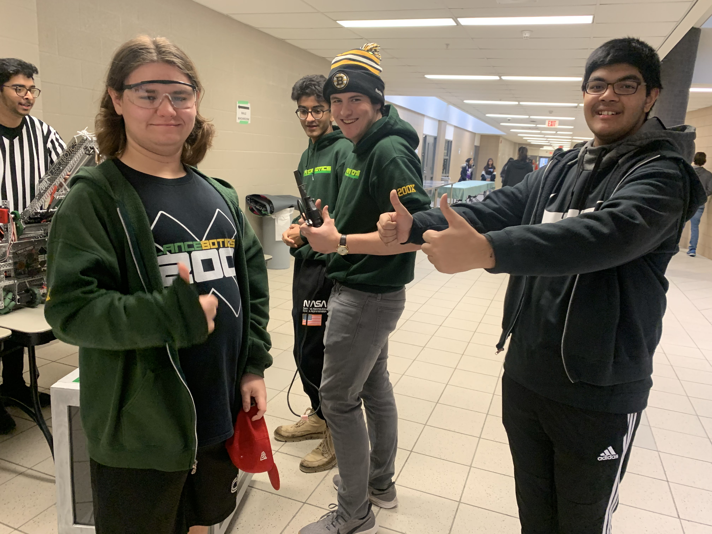
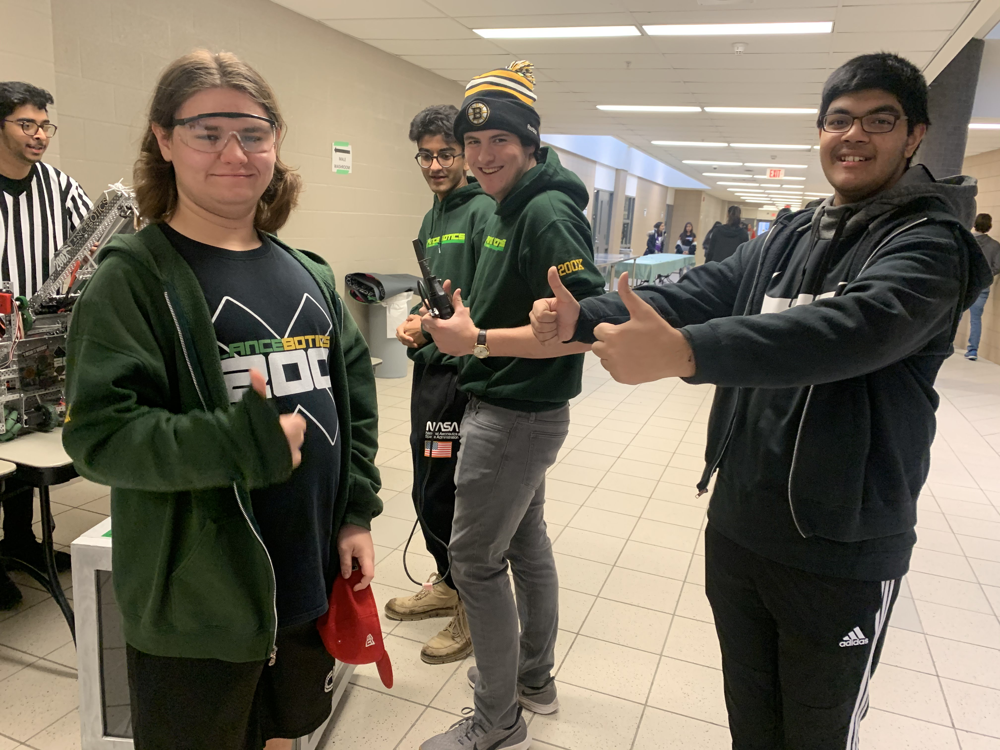
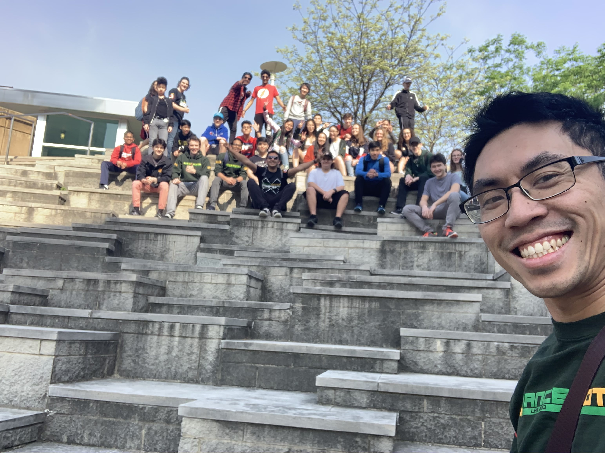
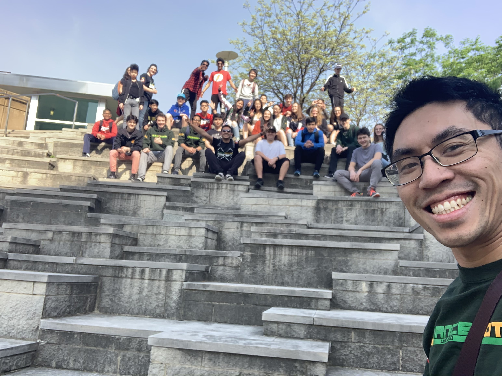
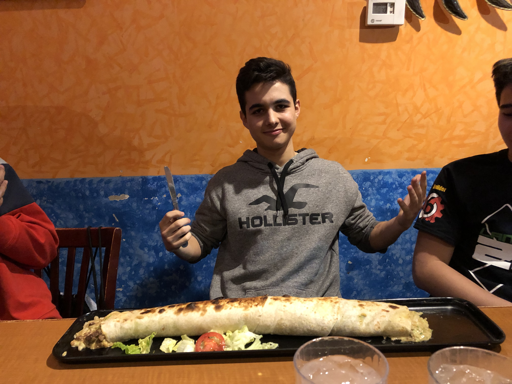
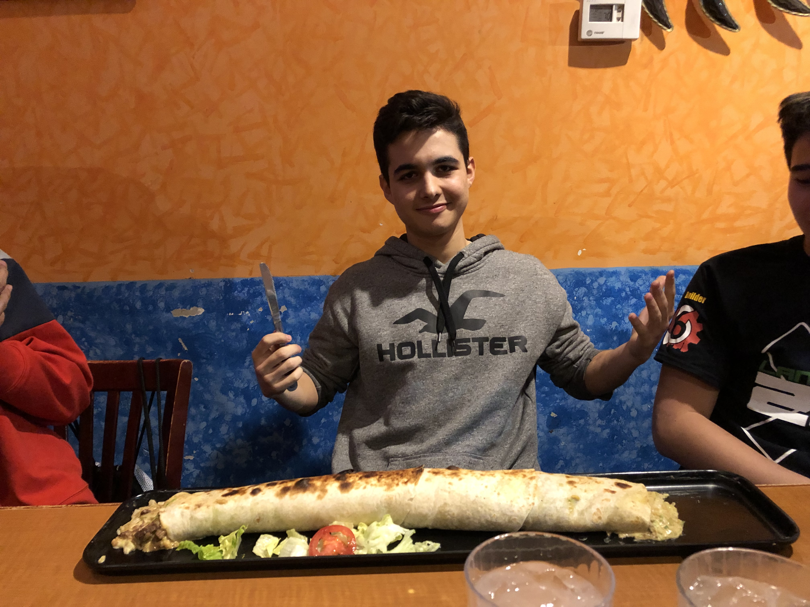

Our Community
As a robotics team, we like to spread the love and passion for STEM through activities around our community, as well as by sharing our experiences at the events we take part in. Here are our members' stories, ranging from competitions to helping out around the community. We hope you enjoy reading our stories as much as we enjoyed taking part in these events!
Jump to Story


St. Catharines Again!
By Sam Dubiner (Article from the Leaside Chronicle)
March 16th, 2020
Just two weeks ago Lancebotics’s 200G, 200H, and 200X teams attended VEX Robotics Provincials in St. Catharines. After a long bus ride, Lancebotics eagerly checked in to the hotel, but had to leave a half-hour later to begin day one of the competition. The first day involved claiming our workspace, small talk with opponents and allies, and running around the empty, giant auditorium that would soon be hosting hundreds of eager robotics teams from across Ontario and Quebec.
Returning late from the competition’s first day, Lancebotics headed to Red Lobster where money was poured into the venue, and seafood and melted butter were poured into our mouths. The following day was a stressful one, in which our members found themselves busy scouting other teams (a seemingly boring task that somehow makes you feel like a super spy), maintaining their team’s bot, or perfecting a bot’s programming. From early in the morning to late in the evening, everybody was working hard to ensure that Lancebotics would have a place in VEX Worlds. While enormous effort created results, 200G, H, and X still faced off against top-tier teams. The variety of opponent skills led each of the teams to have their rankings fluctuate from near-last to the top 10. This, and the general luck of each team, resulted in only 200H finding a spot in the elimination matches and 200X being chosen as an ally for a top team, thus allowing them to move on in the tournament. Unfortunately 200G was not able to secure a spot in eliminations despite their hard work, leaving only 200H and X to deliver a win for Leaside. After both teams won their first matches, 200H lost their second match while 200X faced a disqualification.
However, with all Lancebotics teams out of the main competition, 200X was still able to qualify for Worlds through their high points in skills - all the sleepless nights spent practicing and programming had finally paid off. We’ll be watching you in Kentucky from the VEX stream broadcasts, 200X!
See more pictures
A Historic Alliance Selection for LanceBotics
By Sameer Passi
February 9th, 2020
The last regional competition of the season. Next stop was provincials. My team, 200X, had already been qualified for a while and 200G had recently qualified through skills. It was a last chance for all the LanceBotics teams to show off their skills and for 200H to qualify for provincials (even though they had the highest skills score of unqualified teams in Ontario). The day started off like any other, arriving at 8am sharp, submitting my notebook, taking off my LanceBotics gear, and setting up my scouting sheets.
The competition was going well. My team went undefeated through all six qualification matches, but we ended up in 4th place among the other undefeated teams. The scouts had done a great job preparing the drive team for what to expect from our alliance and opponents for every match. Our sister teams were doing quite well, both finishing with three wins and three losses, but they’d had some difficult matches.
Now came alliance selection, and with it, the highlight of the entire day! Martin, co-captain of 200H, showing up in a full suit (looking super fly) after coming from DECA Provincials earlier that same day! Myself, the drive team, and other scouts had composed a list of teams (in order) that we would like to pick, but turns out that was completely unnecessary because we’d caught the eye of the first seed in qualifications, Pilons (In The Zone World Champions!), and they decided to pick us to form the first seed alliance for Eliminations. This was a historic moment for LanceBotics! Never in our existence had any previous Pilons team picked any previous LanceBotices team, so we obviously accepted and were honoured that such a great team had recognized our skill.
Circling back, it turns out Martin came back at just the right time, as he accepted to join an alliance with Team 18068A Thornhill Knights (the team we had won the Toronto VEX competition with) that would take 200H all the way to the semifinals in what would be a very controversial match. 200G also made the eliminations, but faced a high seed in the round of 16 -- losing there. As for us, we went on to win the competition with Pilons, getting through some really tough opponents and staunch defense (especially in the semifinals).
And so the final competition before regionals was almost complete, save the awards, where we won the Judges Award and learned that we were tied for 1st in the Excellence Award category (but that went to our amazing alliance partner, Pilons, due to a tiebreaking higher Skills score). Overall, it was a really exciting day for all teams and now it's back to work to get ready for provs.
See you in St. Catharines!
See more pictures


The Brampton VRC Waitlist Brawl
By Sam Chowdhury and Sameer Passi
February 4th, 2020
It wasn’t until a week before the 2020 Brampton VRC Qualifying Event that we’d noticed we were still on the waitlist. The event organizer had reached out to us, and informed us that they had one spot for LanceBotics -- but we’re a three-team organization. There was a debate over which team would take the spot for the entire week. 200G had decided that they would prefer some extra time to prepare for the following competition, so it was between our team, 200X, and 200H.
After a weeks worth of debating, 200H got the competition spot since they needed to qualify for Provincials ASAP, and were capable of it thanks to their Robot Skills Score. Which meant our team had to do homework instead of robotics that Saturday, although we weren’t complaining since we wanted 200H to qualify and go to Provincials with us and 200G.
Luckily that same Friday before the competition, we were given two more spots, allowing all LanceBotics teams to go to the competition! We happily ditched our homework plans, and went to the competition.
Many of our other members were not able to show up on such short notice, so we were understaffed, just like the Appleby competition (Which we didn’t go to since we had exams in the following week). We had to work with the members we had, which at first sounds difficult, but it turned out to be easier to manage scouting information.
Although it was our toughest regional competition yet, all of our teams performed well. 200G won 4 matches, lost 1 and tied 1. 200H won 3, and lost 3, but were 5th in Robot Skills at the competition (The score qualifies them for Provincials!). Our team came undefeated with 6 wins, even though we had some difficulty with robot maintenance between matches since none of our maintenance crew was present.
Our undefeated record landed us first overall in qualification ranking, allowing us to have first dibs on any team at the competition. We had a scout meeting before Alliance Selection and came to the consensus of 905Y who had performed great as usual, but also had a sense of familiarity with us. We fought hard until the Quarterfinals where we were disqualified in auton which was caused by an unplugged conveyor motor. Then, the other conveyor fell off during the match, but we only lost by 1 point in the end.
200G got picked by 18068A Thornhill Knights (The team we won Toronto VEX with), and made it all the way to the semifinals! Unfortunately, 200H had not been picked, but their Robot Skills Score was a reward enough for their hard work. They were coming to Provincials with us!
Just as we thought the competition was over, we received the Excellence Award -- the most prestigious award available at any VEX competition. We were overjoyed with the Award, even after such an unfortunate Quarterfinal match we played. What’s more, we also received our first ever banner for an award alongside the trophy!
The day was over, everyone was exhausted, but the success we’d reaped on as an organization was well worth the hard work and the missed homework!
See more pictures
Applebee’s Bar and Grill...?
By Sam Dubiner
January 28th, 2020
It wasn’t until a few days before the competition that I realised that LanceBotics wouldn’t be heading off to dinner at Applebee’s Bar and Grill, but rather would be going to Appleby College for another competition. In my defense, the team group chat was filled with autocorrected “Applebee”, and as a first-year I was none the wiser to the quick texts sent out by our Captain. After arranging a ride with teammates, getting stuck in traffic, and contemplating helping a car stuck in the snow, we arrived at the comp. A giant expensive gymnasium greeted us, along with a plethora of teams and bots. The gym seemed like it was made for the sole purpose of hosting robotics kids, with a padded floor and soundproof walls.
The tournament started a few minutes after we arrived. An opening ceremony was held, which included the national anthem and an introduction from some surprisingly ecstatic commentators. Once check-ins with the referees were finished, the first few matches began. With each 200 team severely understaffed due to exams (especially 200G who did excellently with only one member available), LanceBotics’ fighting spirit showed as each team ranked higher and higher on the leaderboards. While the builders and programmers alike were busy working on our robots, I handled scouting. Watching 50-something matches wasn’t invigorating in the slightest, but I found that I knew much more about robotics by the time the competition was over. Even if I wasn’t able to help with maintenance or be on the drive team for 200X, I still relayed any useful information about other teams and future alliances or opponents to our team Captain.
With the main part of the competition over, we moved on to Alliance Selections. As none of the 200 teams made it into the top 8, we had to rely on other teams to choose us as an alliance partner. Unfortunately, 200G was not chosen, but both 200X and 200H had their matches of which neither were able to progress to finals. 200H lost a close game against a top team, and 200X’s alliance was disqualified, which resulted in an automatic win for the opposing team. The day proved itself to not be over, after 200X won a Judge’s Award - which was well worth the wait. The tournament ended with an extremely close game that had everybody gathering around the arena. While I personally didn’t get what was so interesting about the final match, the smiles among everybody in the gym brightened not only mine, but also the rest of LanceBotics’ day!
See more pictures

 

One of My Last Regional Competitions
By Sam Chowdhury
December 8th, 2019
It’s become muscle memory for me now, waking up at 5am on a Saturday for a competition. The routine was taking a shower using my best shampoo, conditioner and body wash, shaving to look fresh (even with the visible lack of sleep!), brushing my teeth, fixing my hair, and using my favourite cologne, all to make myself presentable for the rest of the day, where I’d represent my team as one of our Scout Captains by communicating with alliancing and opposing teams throughout the day as well as leading our Field Scouts, and as Co-Captain of the Media Team, I’d make sure everyone was working productively. I’ve followed this routine for the past three years for Regional Competitions, so it was much less stressful and much more memorable as one of my last regional competitions as a member, before I graduate in June of 2020.
By the time we arrived at the competition, it was the usual. Settling down at our team pit, rushing off to the Inspection table with the robot before our match was up, and organizing everyone into their roles. Once I had organized the Field Scouts into groups and gave them their match-watching schedules, I joined my friend and teammate Chunfeng in the pits, where we scouted our match alliances as well as our opponents in the Qualification Rounds. We’d done this together since grade 9, and although the thought of it being our last season did make us a bit sad, we knew that we’d never forget running around the pits trying to find our next match alliance, and finding out from their pit neighbors that they went to the practice field, only to not find them there, but come back to their pit and find them!
At the end of the Qualification Rounds, my team -- 200X -- had ranked 11th place with 5 wins and 1 loss. 200G was ranked 5th with the same match results, and 200H placed 13th with 4 wins and 2 losses. All three of our teams had made the Elimination rounds! Unfortunately, 200H and 200G were knocked out in the Round of 16. However, 200X, alongside the 1st ranked team 905Y, had reached all the way to the Semifinals, where both us and 905Y had blown a port mid-match due to static buildup on our robots. We were upset by the unfortunate turn of events, but we knew that it was out of our control and we did the best we possibly could, given the circumstances. Congratulations to teams 839A Caution Tape and 2381C Kernel Bye on winning the Tournament!
As the season progresses, I am closer to the end of my VEX career as a student member. I hope to return to the team the following year as a mentor to share my experiences and provide guidance to the team, but I’ll never forget the thrilling Saturday Regional Competitions where I came face to face with the action! I’ll always look back to admire how much the experience has paved my passion to pursue my studies in a STEM field in university next year.
See more pictures
Annual Leaside High School Grade 8 Parent Night
By Sameer Passi
December 6th, 2019
On Thursday, December 5th, Leaside High School had a Grade 8 Parent Night. The evening, which lasted from 6-8pm, consisted of an assembly about the school and all of its opportunities including talks from student leaders.
The parents then had the chance to walk around the school, visiting different club leaders and clubs in action. LanceBotics received about 50 parent visitors (some of whom brought their children along as well). Many of the parents we talked to thought that robotics was a very high interest club and believed that their children would love to be a part of our organization.
During these conversations, our members provided a general overview about the LanceBotics program. We explained the game, past and previous, the competition formats, where we’d gotten to compete, our success as a school team on an international stage, and of course in the spirit of the whole night how potential 9th graders could apply. Every parent and kid that I talked to said that not only were the robots extremely impressive, but also how interested their kids would enjoy this program. The only concern some parents saw was the fact that their kids may only participate in robotics and not tap into Leaside High School’s wealth of extracurricular activities, however we assured them that almost every LanceBotics member has a large skillset and participates in more than one club and/or team.
Overall, it was an honour to talk with the future students of Leaside and their families. Can’t wait to see you next year!
See more pictures


A True Introduction to LanceBotics at the Toronto VEX Competition
By Sameen Yousuf
December 1st, 2019
My first VEX competition in a nutshell, was unforgettable. As a new member of LanceBotics, I’ve had much to learn and see since I began a few months ago and it took longer than expected. When I first joined, I thought I would already be well acquainted with most of the members, but I realized soon enough that the LanceBotics’ community is larger than life. I’ll admit, I was a little intimidated by so many impossibly smart people working together twice a week in one room and their sufficient knowledge in STEM. As the new engineering notebook, most of my job was documenting, but there was a lot I needed to wrap my head around and the responsibility to write a good and detailed notebook overwhelmed me.
However, a lot of my worries about fitting in and doing my part seemed to vanish at Woburn Collegiate. A part of me thought that I only got the role as a photographer because I would not be useful otherwise, but I later realized that the job was not only important, but incredibly fun as well. Members from 200X, 200G, and 200H stuck together to watch the matches and created great memories along the way. I was glad to be the one to catch every valuable moment on camera. Though I don’t have much experience with photography, I managed to take amazing photos that varied from group pictures, shots of cubes and bots tumbling down during matches, and members on break who laughed and danced.
Every team had several ups and downs throughout the day. In fact, my team had met its first problem at bot inspections when ours was a little over the height limit. However, seeing that we have a team full of intelligent people, we managed to come through and though some alliances were worse than others, 200G finished at 16th place and became Quarterfinalists. 200H’s experience was a little harder as they came in 56th place, but they learned from it and got the chance to realize how they would improve for next time. The final team is one that we all expected to do more amazing than most, but even I was surprised to see them not only win the Excellence Award, but become Tournament Champion as well as the Robot Skills Champion! Well done 200X!
Overall, I would consider LanceBotics’ first competition of the year a great success. Together, we carped this long diem of stress and amusement. My perspective on the world of VEX was influenced for the better. I had spent hours with the members of LanceBotics for several months before Woburn and I watched our drivers practice on the field at school, but I felt truly introduced to VEX when I got to attend an actual competition and see the matches for myself. Leaside would cheer for all their teams, louder than everybody in the auditorium. It was fulfilling to see so many people from schools in Ontario who all consider robotics to be a part of themselves. I’m glad that it can be a part of me too and I for one can’t wait to see what the future has in store for us.
See more pictures
Working at RoboEDU Leaside
By Michael Cassidy
Nov 18th, 2019
As one of the many things that the LanceBotics team does to promote the STEM community, we have a few members of our team the volunteer or work for a robotics school called RoboEDU in Leaside.
We first met the people who run the school in the spring of 2019 when we were looking for sponsorships to bring us to the 2019 VEX World Championship. When we talked to them about our achievements and how we were trying to promote STEM, they were amazed decided to sponsor our team.
After the 2019 VEX World Championship, RoboEDU reached out to our team to ask if there were any members who were interested in volunteering at their STEM school. In response, two members of 200X -- Shashank and I -- started volunteering as teachers on a weekly basis.
As the weeks went by, we taught young kids about STEM, coached their VEX IQ team and created a curriculum on the VEX IQ “Squared Away” game and taught it as a summer camp program. After the summer, we were offered part time jobs because of the success we had while volunteering for the organisation.
Working for RoboEDU is a great experience that teaches us how we can directly promote STEM to younger people in our community, and also how rewarding it is to teach something you love to students who will really benefit from you sharing your experiences.


Annual Leaside High School Terry Fox Run
By Sameer Passi
September 27th, 2019
On Friday, September 27th, our school hosted our annual Terry Fox Run. This run is deeply important to our robotics team because our school lost a teacher, Ms. Slean, to cancer. Many of our involved LanceBotics alumni and current members were taught by Ms. Slean and we are motivated by her evident passion and commitment for teaching.
The Terry Fox Run is a very dear event to our robotics organization, as it gives a chance to do our part in the global fight against cancer. Although we are just in high school, for now we can inspire our peers to pursue post-secondary education in a STEM field in order to make a difference in this fight. We understand that there has already been great advancement in cancer treatment, but still 9.8 million people died of the disease in 2018. In the words of one of our national hero’s, “I just wish people knew anything’s possible if you try; dreams are made true if you try.”
The Hackergals Hackathon
By Crystal Jin
May 11th, 2019
Rachael Mohl and Crystal Jin were judges and mentors at the Hackergals Hackathon at Bessborough Drive Elementary and Middle School. Hackergal is a charitable organization that inspires girls to explore the opportunities in code by hosting all-girls hackathons in schools across Canada. With women vastly underrepresented in the tech industry, Hackergal strives to inspire a new wave of Canadian female coders to bring equality to the booming industry. During the 7 hour hackathon, a group of 11 girls from grades 4 to 8 worked either in pairs or independently to create an interactive project. The girls created a “choose your own adventure story” program that promoted living a healthy lifestyle. Throughout the day, Rachael and Crystal provided assistance with brainstorming, problem solving, and troubleshooting their projects. At the end of the day, the girls presented their creation for Rachael and Crystal to evaluate the projects and provide feedback. Rachael and Crystal also described their personal S.T.E.M journey including 200 Lancebotics, Computer Technology, Computer Science, their experiences as women in S.T.E.M and had a small Q&A session. Overall, the girls learned and developed their communication skills, critical thinking, leadership, and were exposed to their current and future opportunities in S.T.E.M.
 

 

An Unforgettable International Experience
By Sam Chowdhury
April 29th, 2019
It was the perfect trip. For five days and four nights, we were almost 1000 kilometres away from home, away from our responsibilities, homework, and most importantly away from our parents! My team, 200X, qualified through the Think Award at the 2019 Ontario VEX Provincial Championship back in February. We were very proud of ourselves for having made it so far, as it was our first year without any senior members on the team.
On Tuesday, April 23rd at 9:00AM, we departed from school to Louisville, Kentucky. The 13 hour bus ride felt faster than my commute to school (It’s quite slow and dreadful due to the construction of the new transit system that passes by the school and by my place, which has been ongoing since I first came to Leaside High School). We played Minecraft together on our phones, sang along to Michael Sirna’s throwback playlist, played Exploding Kittens, played Super Smash Brothers Ultimate, and partied our energy away. Meanwhile, our hotel had called our Staff Advisor -- Mr. Lu -- to notify him that they were overbooked, meaning we had nowhere to go. After he made four-hours-worth of phone calls, he managed to find us a hotel relatively close to the competition venue. He had lost his voice, but he had done it for us.
Once we reached the hotel, I realized that I’d lost my voice as well, from talking non stop on the bus. I guess I hadn’t realized that I constantly had to speak over the hum of the bus on the highway. This was a problem for me, as I was the Scout Captain, and I needed to speak and lead meetings, so the broken voice did not help. Thankfully, my friend Malcolm had not lost his voice -- a very loud and powerful one -- so he helped me maintain control during meetings when it was needed.
On the first day, we spent the morning touring downtown Louisville. We visited the Louisville Slugger Museum & Factory, took a team picture next to the Muhammad Ali Center and next to the wax statue of Colonel Sanders. Unfortunately none of us were able to locate a KFC nearby (which was on everyone’s bucket list for the trip)! After lunch, we headed to the Kentucky Exposition Centre, where we set up our pit with our banner, and organized our tools and resources. After participating in the Practice Matches, we headed out for dinner at Famous Dave's Bar-B-Que, where I had the “Spiciest Wings” in Kentucky. Spoiler Alert: They weren’t spicy, at least for me. The ghost peppers were nothing! After dinner, we went to Walmart to buy snacks and food for the coming days, in case we needed anything overnight at the hotel. I bought instant ramen, since I knew I’d need something to fuel myself for the late nights when we stayed up to work on the robot, or to vent to each other.
Every night, once the robot maintenance was complete, at least half the team would visit my room -- 179 -- to hang out. We played card games, but it would always lead to us venting. It brought us closer together, since we felt comfortable sharing our problems from outside of robotics with each other. For me, it was a new experience, as I hadn’t been comfortable sharing things about my personal life until the group had shared parts of their personal lives. We supported each other mentally, and we still do through a group chat made with the 13 members who had come to my room. We can still support each other even when we’re not there in person to help. It made me feel much better knowing I have friends to talk to just a few clicks away, especially when half of the members would be graduating that upcoming June.
The next three days went by in a flash. We woke up at the crack of dawn, drank as much coffee as we could to make up for our lack of sleep, and headed out to the competition. As the Scout Captain, I was in charge of all our Field Scouts, who watched the matches in our division and recorded information on every team. The first match-watching schedule I had made was terrible. It allowed for no breaks for scouts between matches and lead to the scouts being stressed out. I quickly fixed this with a new schedule, where there were more breaks, which not only allowed for my scouts to relax a bit, but also gave me some free time to explore the venue. I walked around the entire competition, visiting all the team pits, collecting pins, wristbands, and even a mini 3D printed Cap! In the end, I collected the most items on the entire team, and I proudly displayed it with 40 wristbands on my arms, and over 50 pins on my shirt!
By the end of the Qualification Rounds in the Math Division, we had a record of 4 wins, 6 losses and 1 tie, but did not make it to the Elimination Rounds. Considering none of our current members had no previous World Championship experience, it was a pretty big accomplishment for our team. We watched our divisions’ elimination rounds, and watched as teams 8059A “Blank.” and 169A “The Cavalry” went on to win the division and move onto Freedom Hall, where the top teams from the other divisions would compete as the world watched!
Before the final matches, we watched the Parade of Nations, where each country participating at the World Championship walked through the stage with their flags held high. It was eye-opening to see how many countries were part of VEX, and seeing all the people cheering in Freedom Hall with me made me feel like I was part of something very special. Watching the final matches with the best robots from around the world, inspired me to look forward to the next season -- though it would be my last -- and work towards competing among those top-tier teams. Once the winners -- 98060C and 7405P -- were announced and celebrated, they revealed the new game, “Tower Takeover.” It’s an interesting game, with all the towers and stacking.
Not long after the 2018 - 2019 VEX Competition season was over, we headed across the street to Kentucky Kingdom, a theme park for which VEX had provided a free ticket to every World Championship Participant. After dinner at the park, my teammate Casey and I went on every big roller coaster ride, to claim that we had conquered the theme park. We had just gotten off the last roller coaster at closing time, and we were satisfied with our adventure. We walked back to the hotel, packed up a bit, but partied some more. It was our last night in Kentucky, and what a week it had been! We played multiple rounds of Exploding Kittens and barely slept.
The trip back to Toronto was quiet in the beginning since everyone was catching up on much needed sleep. Towards the end, many members began doing their homework, since it was mostly due the next day back at school. It was time to return to our responsibilities, to school, to our families. It was time to go home.
All in all, the 2019 VEX World Championship was the best experience I’ve ever had. A week spent with my robotics team, my second family. I’ll never forget the time when Artie attempted to eat a 20 inch burrito in 20 minutes, or when we vented our problems at 3AM every night while eating ramen, or running around the competition to scout other teams as well as collect some international merch. I can’t wait for what’s to come next year, and I hope we make it to Freedom Hall this season with the experience we gained from this trip.
See more pictures
Provincials And The Road to Worlds
By Shashank Ojha
March 27th, 2019
“Consistency and repeatability is the key to success, never leave anything up to chance.” This was the motto that every member of 200X kept in mind for the whole season. As the Team Captain of 200X, I’m happy to say that after months of blood, sweat and tears, our team qualified to compete at Ontario Provincial Championship and subsequently -- to represent Toronto and Canada -- the 2019 VEX World Championship.
My journey in the STEM began in grade 9. It was as a member of the grade 9 robotics team that I began my journey, exploring the field of robotics and working to create a robot that qualified us for the Ontario Provincial Championship. Subsequently, in grade 10, after acquiring more experience, I joined the class team and learned building to perfection and the importance of consistency from Devin, our Team Captain back then. We won our first tournament and qualified for the Ontario Provincial Championship where we were only one match match away from qualifying for the World Championship. That feeling of defeat, knowing that we were one match away from our goal, one win, was a significant loss for me, but in the end it made me come back stronger than ever before. I realized that our setbacks should not be something that we’re sorry about, but rather an opportunity for us to reflect and become stronger.
After this realization I had an even more powerful drive than ever to make Worlds and that was the mission I set off to accomplish in grade 11. Now in grade 11, I became the Captain, Lead Builder and Driver of my robotics team and ensured that our team did everything possible to reach our goal of making Worlds. Members in my team had the same drive as me and assisted in building the robot to perfection. At times our team would build for over 12 hours or practice for 12 hours to get the consistency and efficiency needed to succeed.
Soon, we realized that our hard work started to pay off as we started to make it past semi finals in most of our competitions and soon became known as one of the best teams in Ontario. After much practice, Provincials came and we were at the peak of making worlds. After a difficult match list we persevered and received the Think Award, an award given to the team with the most innovative programming, qualifying us for the World Championships. Being the only team in Toronto to qualify to worlds, our team prepares harder than ever, puts in even more work, even more determination to hopefully receive that World Champion title.
I can say that at the end of the day it all was worth it, all our tears, all our hard work it all paid off, because we learned to not give up when something didn’t go your way. However, the point of this story is not to talk about our achievements, but rather to state that a setback in life is not permanent, it is merely a moment to reflect and rise from the ashes stronger than before.
See more pictures


My First Ontario VEX Provincial Championship
By Jaya Roy
February 24th, 2019
One of my fondest memories of grade 10, was definitely the trip to the provincial tournament held in St. Catharines. At the time, I was still relatively new to robotics and I was still getting into the gist of the competitions. I wasn’t really sure what to expect but it was bound to be loads of fun. I was going on an overnight trip with my best friends, staying in a hotel, missing a day of school, and best of all, there would be no parents! For a 15 year old robotics nerd, that was pretty sweet.
The bus ride up to St. Catherine’s flew by. We played epic rounds of Never Have I Ever and chopsticks and blasted music until the driver told us to turn it down. When we got there, we checked into our rooms and headed to the venue to get our stations set up. I didn’t realize how big this tournament was until I wandered into another gigantic gymnasium and saw the tables waiting for their respective teams. We had driven up a day early and there was still some time to kill so we headed out for dinner. The night was full of laughter and jokes as we sang happy birthday to Mr. Lu - the supervisor of our team - despite the fact that his birthday was in September. I later learned it’s tradition to sing for him every time the team goes for dinner.
Upon returning to the hotel, we spent most of the night running back and forth between rooms and not getting very much sleep. The next day I woke up so ready and excited for the day ahead of us. I was so full of energy but by lunch I was ready for a nap under our table. I spent the day pit scouting, queuing and taking pictures. As it turns out, it’s quite difficult to try to sneak peeks at other teams’ robots from afar without looking suspicious, and there were so many teams to scout. I had no idea how vast the VEX universe was, and that was only the provincial tournament! Everyone’s robot design was different in some way. It was interesting to see how other teams played the game.
When the last match had been played, Alliance Selection rolled around and we got to work on repairing and preparing for the Elimination Rounds. Almost all the 200 teams had either made it into a picking position or had been picked as an alliance partner. Sadly 200G and 200X both missed World Championship qualification by two matches, although 200G had placed 15 in Ontario in Robot Skills! 200H had unfortunately finished their run at 41st place in the Qualification Rounds. Although LanceBotics had been knocked out of the Elimination Rounds, 200G had won the Build Award, and 200X won the Think Award, which qualified 200X for the 2019 VEX World Championship!
At the end of the day, while the awards were being handed out, a few of my friends from 200H and I snuck back to the practice fields to drive our bots around for the last time. Neither of our teams had qualified for Worlds, so chances were upon our return to the school, our bots would be dismantled and used for next year. I’m a builder not a driver so I had no idea what I was doing. One of my friends, Chris, promised to teach me how to control the robot properly. Spoiler alert: he didn’t. I had never wanted to drive for our team but taking the bot for a spin around the field showed me how to see things from our drivers point of view, but I was a terrible driver. I rammed my bot into 200H’s robot so hard I broke their intake!
It was an amazing trip with amazing people. Although my team didn’t get exactly where we had hoped, 200G did pretty well overall. 200X qualified for Worlds which was a win for all of LanceBotics! We were all very proud of them. They’d worked hard and it was well deserved! I can’t wait to take part in the 2019 VEX World Championships in April!
See more pictures
Join the Family
We don’t bite. Lancebotics welcomes all future and returning sponsors to the Lancebotics Family. Support allows us to take part in competitions, strengthen our team, and to promote STEM learning. We use funding for:
Your support allows us to continue to participate in VEX competitions with high quality robots, and to aim for the number one spot this season.
Learn more

 YouTube
YouTube  Instagram
Instagram